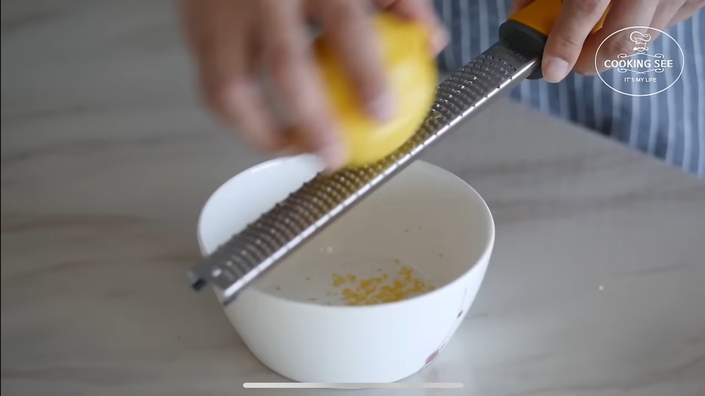
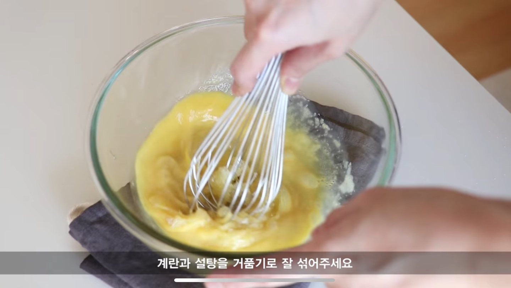
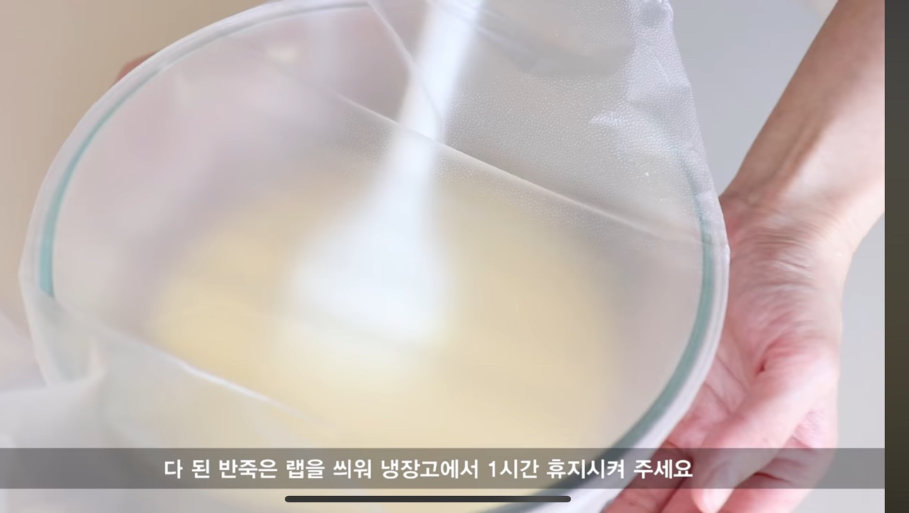
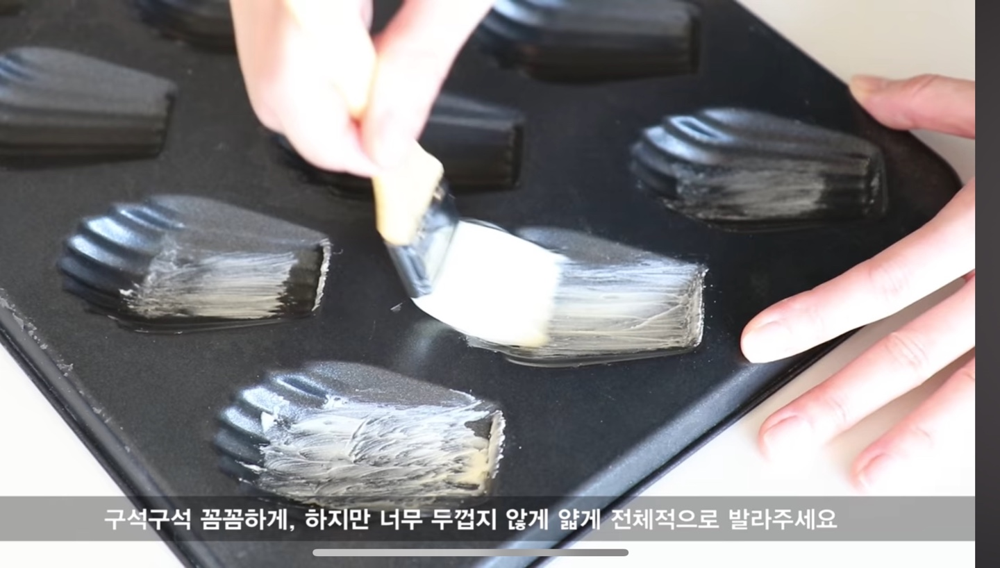
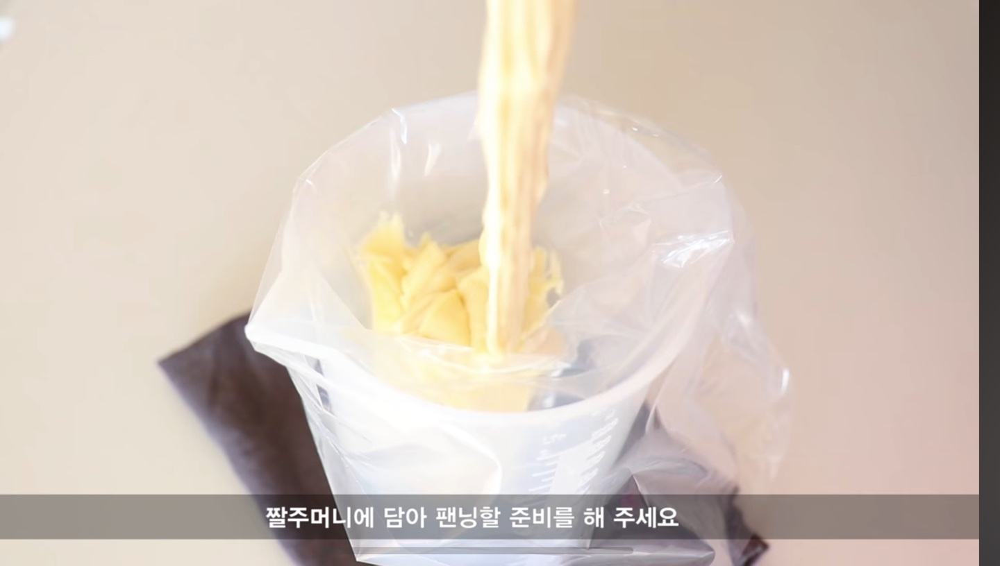
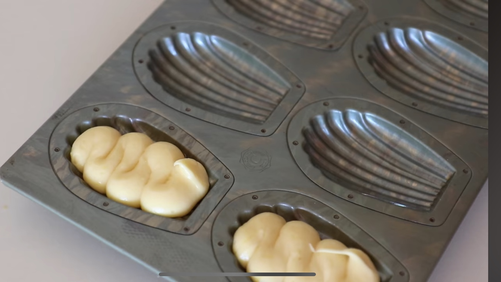
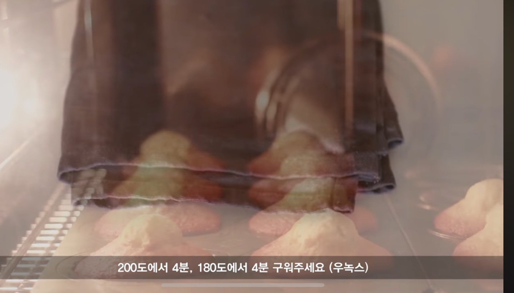
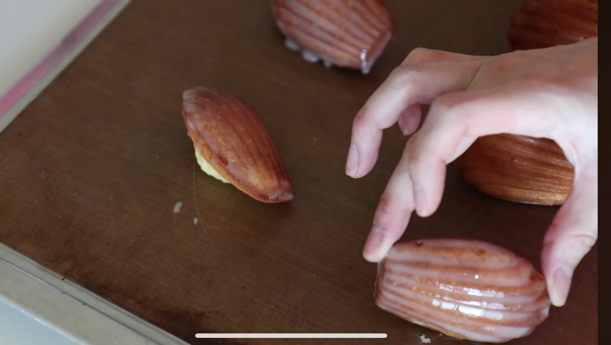
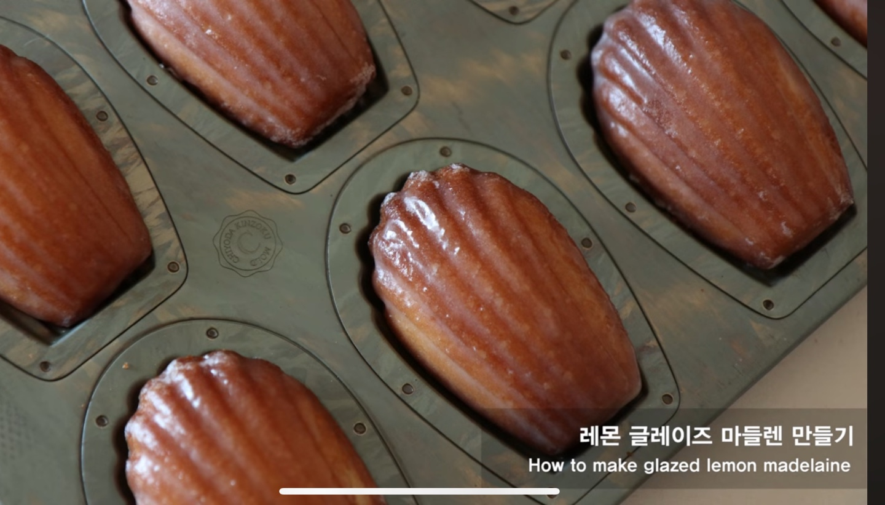

🧑🏻🍳준비 재료🧑🏻🍳
공통
- 버터 85g, 계란 77g, 설탕 67g, 꿀 12g
- 박력분 62g, 아몬드가루 15g, 소금 1g
추가
- 바닐라익스트랙 2g, 베이킹파우더 3g
- 레몬 제스트 1개 분량
레몬글레이즈
- 슈가파우더 70g (파우더 종류마다 상이)
- 레몬즙 12g, 물 5g
1
레몬제스트와 설탕을 손으로 버무려
1시간 정도 그대로 둬서 향이 우러나오도록 만든다.
남은 레몬은 즙을 내서 준비해둔다.
2
실온의 계란에 설탕, 꿀, 바닐라익스트랙을 넣어준다.
설탕이 충분히 녹을 때까지 계속 섞어준다.
3
4~60도로 녹인 버터를 넣고 전부 잘 반죽에 흡수될 때까지 섞어준다.
다 된 반죽은 랩을 씌워 냉장고에서 1시간 휴지시켜 준다.
4
부드러운 버터와 강력분을 5:1 비율로 섞는다.
틀 표면에 구석구석 꼼꼼하고 얇게 전체적으로 발라준다.
틀은 사용 전까지 냉장고에 두어 버터가 굳을 수 있게 한다.
4
짤주머니에 담아 팬닝할 준비를 해준다.
6
틀에 90% 정도씨 채워준다.
반죽을 계속 차갑게 유지해주는 것이 중요하다.
7
200도에서 4분, 180도에서 4분 구워준다.
오븐에서 꺼내 식혀준다.
8
마들렌이 식는 동안 슈가파우더에 레몬즙을 넣고 섞는다.
묽지 않게 흐르는 정도까지 저어준다.
한김 식힌 마들렌 위에 발라준다.
9
완성!!! 커피나 차와 함께 맛있게 먹어준다-!